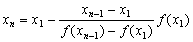

試位法(I)
試位法的算式:

| ) | ( | 0 | A | - | B | ) | ) |
| yx | 0 | . | 5 | yx | 2 | ÷ | +/- |
| B | - | B | ) | x-1 | ( | A | - |
| ANS | ) | B | + | A | STO F1 或 F2 | ||
例題: 用試位法解 x³ – 2x – 1 = 0, 1 < x < 2。
先計算f(1)= -2<0及f(2)=3>0 (需要自行計算)
按 ON/C 1 = (先輸入x2 ) 2ndF ANS yx 3– 2 2ndF ANS – 1 (函數變數為ANS)
RCL F1 ALGB 2 = 3 = (再輸入x1及f(x1)的值，顯示第1近似值為1.4，如果入錯x1及x2的次序，在計算第二近似值時，會出現Error 2，但可糾正錯誤(註1))
= (顯示第2近似值為1.556213)
= (顯示第3近似值為1.601817)
= (顯示第4近似值為1.613872)
= (顯示第5近似值為1.616972)
= (顯示第6近似值為1.617763)
= (顯示第7近似值為1.617965)
= (顯示第8近似值為1.618016) ……………
註1: 如果入錯x1 及x2 的次序，第一個近似值會正常產生，但計算第二近似值時會出現
Error 2，糾正方法是按 ←或 → 再按 ALGB
重新輸入正確的x1及f(x1)的值即可，跟著會顯示正
確的第二近似值。
註2: 若果在計第3近似值或之後的近似值出現Error 2，表示並非單一定點，所以本程式不能
自動計算下去，但在Error 2之前產生的近似值依然是正確。
註3: 由於計算這類問題，一般都要計算f(a)及f(b)的值，若果計算較複雜(不能心算)，可以先打
出用ANS為變數的方程，利用這個方程作函數計算，計算f(a)及f(b)後，該方程亦可直接加於儲
存的程式(按à RCL F1)，因此打一次函數方程(ANS)，除可以作函數計算外，亦可供程式使用，
所以可以使效率更高。
註4:若果f(x1)的值很複雜(很多個位)，可以直接將計算數值存於B的記憶中(STO B)，使得真正執
行程式時不需要輸入一個很長的數值。
相關資料:
半分法(I) (Bisection method I)
半分法(II) (Bisection method II)
試位法(II) (False Position method II)
正割法 (Secant method)
正割法及試位法 (Secant method and False Position method)
牛頓法(I) (Newton method I)
牛頓法(II) (Newton method II)